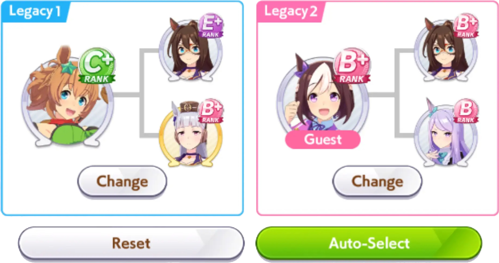
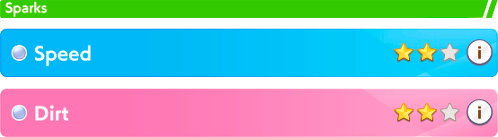

Escoger un legado inicial puede ser complicado, sobre todo cuando uno no tiene experiencia, no sabe que onda con el juego o al ser novato no cuentas con legados fuertes, pero ¿esto que significa? Te explico.
A la hora de empezar una nueva carrera, el juego te dice que escojas aparte de tu personaje, el legado que lo acompañará (son las dos casillas donde debes añadir personajes que son los legados)

Este legado basicamente lo que hace es que aumenta incialmente las stats de tu Uma (puede ser de determinadas stats y puede aumentar desde +5 hasta incluso +65 puntos dependiendo del legado) y asi puedas iniciar tu carrera sin estar tan rezagado en stats, aunque dependiendo de que tan fuerte sea el legado tendrás mas o menor impulso inicial, y en los primeros intentos el impulso será minimo por no tener legado fuerte.
Consejo ganador: nunca escojas el auto-select, es mejor escogerlas por tu cuenta
Pero ojo, no solo son las stats iniciales lo que aumentan, porque influyen en mas cosas, el legado tambien puede traer mejoras en estilos de carrera o aptitudes, mejorando la clase del estilo de tu personaje (por ejemplo, si tu Uma tiene clase B en carreras tipo long, un legado puede hacer que suba a clase A, o si es clase G en estilo pace-chaser, puede pasar a clase F) lo que puede beneficiar tus estrategias de carrera.
Tambien los legados tiene el sistema Sparks que basicamente es un power-up de stats que se da al inicio y pueden aumentar velocidad, power o resistencia, lo que es fundamental en el juego o mejorar aptitudes y se diferencian por colores, el azul y rosado.
Los sparks azules son los que aumentan stats del juego, desde los 3 fundamentales (velocidad, stamina o power) y los restantes de wit y guts, mientras que los sparks rosados mejoran aptitudes en tu Uma (mejora su grado en cosas como cierta distancia de carreras, en terrenos de turf o terraceria o estilos de carrera)
Puedes obtener sparks de 1 a 3 estrellas, estas estrellas dicen que tanto se pueden mejorar stats o aptitudes, si tienes un spark azul de una estrella puede subir desde 5 a 15 puntos, si son 2 mas de 20 y si son 3 estrellas pueden ser 30 o mas puntos, no hay un rango muy exacto pero mas o menos es una idea de que tanto suben, y los rosados aumentan mas sus aptitudes, aunque los expertos recomiendan priorizar los azules sobre los rosados.

Pero aparte de que este power-up inicial se da al inicio de la carrera, también en medio del juego como evento aleatorio tu Uma recibirá otro power-up que aumentara sus stats otra vez, estos eventos son llamados "inspiration" y como se dijo, aparecen en un momento random del juego para darte un impulso extra a tus stats.
Por tanto en resumen, para lograr avanzar necesitarás un fuerte legado tanto de tu parte (los que vayas forjando a traves de las derrotas y victorias) como tambien, porque no, de ayudas que tengas mediante personas que sigas, ya que como se dijo en el apartado de las cartas, se pueden pedir prestados cartas y legados de parte de tus amigos y personas que sigas, cosa muy útil para principiantes aunque solo podrás escoger 1 legado de tus amigos, y el segundo tiene que venir si o si de tu equipo, aun asi es una forma bastante util de empezar.
Ya se dijo, el perder es algo natural al inicio y es en parte justamente a la falta de legados fuertes ya que el juego te da legados base debiles y por ende con sparks poco competitivas que influyen en el inicio con poco impacto y luego con las inspiraciones no tan grandes dado a esos sparks, cada que juegues y pierdas tendrás legados de grado mayor, y asi sucesivamente hasta tener legados fuertes, será mucho, si, pero todo se puede con esfuerzo.
 | All rights reserved | Made with ❤︎.
| All rights reserved | Made with ❤︎.